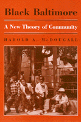

<body bgcolor="#FFFFFF" text="#000000" link="#0000FF" vlink="#CC0000" alink="#CC0000"><center><hr width="350" size="1" align="center" noshade>Community self-help movements in Old West Baltimore provide an example of participatory democracy for other neighborhoods<hr width="350" size="1" align="center" noshade><p><a href="https://cdcshoppingcart.uchicago.edu/Cart/ChicagoBook.aspx?ISBN=9781566390378&&PRESS=temple" target="_top">Buy this book!</a> | <a href="https://cdcshoppingcart.uchicago.edu/Cart/Cart.aspx?PRESS=temple" target="_top">View Cart</a> | <a href="https://cdcshoppingcart.uchicago.edu/Cart/Cart.aspx?PRESS=temple" target="_top">Check Out</a></p><p></p></center><!--none//--><h1>Black Baltimore</h1>
<H2>A New Theory of Community</H2>
<h3>Harold A. McDougall</h3>
<P>cloth 1-56639-037-0 $54.50, Apr 93, <FONT COLOR=#990033>Out of Stock Unavailable</FONT>
<br>paper 1-56639-193-8 $32.95, Jan 95, <FONT COLOR=#990033>Available</FONT>
<br>Electronic Book 1-43991-257-2 $31.95 <FONT COLOR=#990033>Out of Stock Unavailable</FONT>
<BR> 272 pp
6x9
</P><BLOCKQUOTE><I>"McDougall has produced a fascinating mix of history, social analysis and slices of life on his way to presenting an approach to urban America that could make all our cities feel whole again."</I>
<br>&#151<b>Jay Mathews</b>, Urban Affairs correspondent, <I>Newsweek</I><I></I></BLOCKQUOTE>
<p>Through extensive neighborhood interviews and a compelling assessment of the problems of unraveling communities in urban America, Harold McDougall reveals how, in sections of Baltimore, a "New Community" is developing. Relying more on vernacular culture, personal networking, and mutual support than on private wealth or public subsidy, the communities of black Baltimore provide an example of self-help and civic action that could and should be occurring in other inner-city areas. In this political history of Old West Baltimore, McDougall describes how "base communities"&#151small peer groups that share similar views, circumstances, and objectives&#151have helped neighborhoods respond to the failure of both government and the market to create conditions for a decent quality of life for all.
<p>Arguing for the primacy of church leadership within the black community, the author describes how these small, flexible groups are creating the foundation of what he calls a New Community, where community-spirited organizers, clergy, public interest advocates, business people, and government workers interact and build relationships through which Baltimore's urban agenda is being developed.
<BR>&nbsp;<h2>Excerpt</h2><P>Excerpt available at <a href="http://www.temple.edu/tempress">www.temple.edu/tempress</a></p>
<BR>&nbsp;<h2>Reviews</h2>
<p><I>"</I>Black Baltimore<I> is an illuminating look at the history and contemporary practice of black vernacular politics and community life in the city of Baltimore, generated through a remarkable, dialogical engagement with the major African American leaders of the city. On a larger stage, </I>Black Baltimore<I> is also an important contribution by one of the nation's most promising young African-American political theorists and activists to the development of a democratic politics adequate for our time.... McDougall makes a significant contribution to current debates about the role and meaning of community in American life&#151the centerpiece idea in Bill Clinton's 'New Democratic Party' and in contemporary progressive politics."</I>
<br>&#151<b>Harry Boyte</b>
<p><I>"...provides impressive proof that black people have always believed in the axiom 'nobody can free us but ourselves.' McDougall shows that the black community is continuing to create and implement self-help programs in even the most devastated neighborhoods. Both critics and proponents of black development should take note of this book."</I>
<br>&#151<b>Derrick Bell</b>
<BR>&nbsp;<h2>Contents</h2><P>
<p>Acknowledgements
<br>Prologue
<br>1. Civil Rights and the New Property
<br>2. Baltimore's Vernacular Black Community
<br>3. The New Property versus the Vernacular Community
<br>4. Picking Up the Pieces at the Grassroots
<br>5. Black Control of Baltimore's Government: A Hollow Prize?
<br>6. Church, State, and Neighborhood: Forums for Citizen Action
<br>7. Community Building in Partnership
<br>8. Base Communities: Citizen Action at the Grassroots
<br>9. From Base Community to New Community
<br>Notes
<br>Bibliography
<br>Index
</P><BR>&nbsp;<H2>About the Author(s)</H2>
<table><tr><td valign="top"><img src="/tempress/authors/910_au.gif" height="90" width="75"></td><td width="100%" valign="middle"><p><b>Harold A. McDougall</b> is Professor of Law at Howard University in Washington, D.C. A former civil rights and community organizer, he specializes in sustainable civic, political, and economic development, focusing on �cultural DNA� as an element of problem-solving and �civic infrastructure� as a means to keep business and government accountable.</P></td></tr></table>
<BR><H2>Subject Categories</H2>
<p><A HREF="/tempress/political.html" TARGET="_top">Political Science and Public Policy</a>
<BR><A HREF="/tempress/african.html" TARGET="_top">African American Studies</a>
</p>
<p align="center"><a href="https://cdcshoppingcart.uchicago.edu/Cart/ChicagoBook.aspx?ISBN=9781566390378&&PRESS=temple" target="_top">Buy this book!</a> | <a href="https://cdcshoppingcart.uchicago.edu/Cart/Cart.aspx?PRESS=temple" target="_top">View Cart</a> | <a href="https://cdcshoppingcart.uchicago.edu/Cart/Cart.aspx?PRESS=temple" target="_top">Check Out</a></p><p><font face="Arial" size="1"><a href="copyright.html" onMouseOver="window.status='Web Copyright Policy';return true;" onMouseOut="window.status=''" title="Web Copyright Policy">&copy;</a> 2015 <a href="http://www.temple.edu" target="new" onMouseOver="window.status='Link to Temple University home page';return true;" onMouseOut="window.status=''" title="Link to Temple University home page">Temple University</a>. All Rights Reserved. http://www.temple.edu/tempress/titles/910_reg.html</font></p>